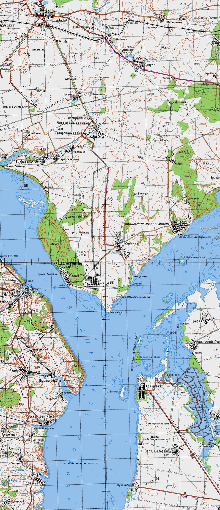

Карты для навигаторов Garmin — подробные и актуальные в формате .img. Главное и основное отличие от официальных карт Garmin — они совершенно бесплатные и очень часто обновляются. Для их установки в GPS или ГЛОНАСС навигатор не нужен ID.
Высокая детализация — есть дома с номерами, много точек POI, хорошо прорисованы дороги. Все файлы для экономии трафика и удобства упакованы в архивы. Скачать любую карту можно напрямую.
Частое обновление карт России и других стран для Garmin.
http://navigarin.com/free_maps
Бесплатные карты Генштаба СССР масштаба 1:200000 (в 1 см. 2 км.) для туристических навигаторов Garmin.
Для использования растровых карт требуется патченная прошивка, которую вы так же можете скачать.
Инструкция по установке карт:
1. Проверьте имеется ли в "Списке поддерживаемых навигаторов" ваша модель Garmin.
2. Скачайте прошивку, для нужной модели, а так же карты необходимых областей, растровую "*.JNX" и векторную "*.img". Файлы формата JNX - карты генштаба, IMG - векторная карта с современными дорогами.
3. Прошивку скопируйте в папку "garmin" на встроенной памяти. Файл "GUPADE.GCD" должен располагаться в корне папки "garmin".
4. Перезагрузите навигатор, дождитесь окончания прошивки.
5. Векторные карты с расширением "*.img" скопируйте в папку "garmin" на карте памяти, либо на встроенной памяти, карты читаются из обоих мест.
6. Растровые карты с расширением "*.jnx" скопируйте в папку "garmin\BirdsEye" так же на карте памяти, либо на встроенной памяти.
Как выглядит карта:
